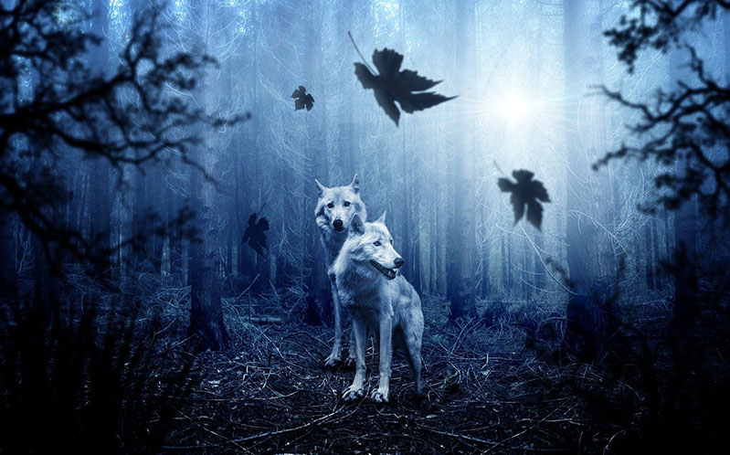
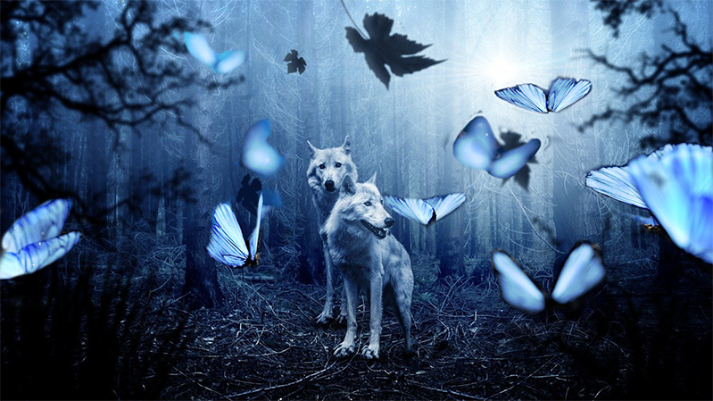

Lab 4
Brief Instructions:
Combining Images with a mask
The objective of this project was to use two images, and combine part or parts of one into the other to create a combined image. In this project, I took the butterflies from the second picture and combined them in the second picture with a mask.
I chose to do it this way because I wanted to learn how to combine certain images in totally different environment.
Last worked on date: 10/03/2021

Last worked on date: 10/03/2021

Last worked on date: 10/03/2021